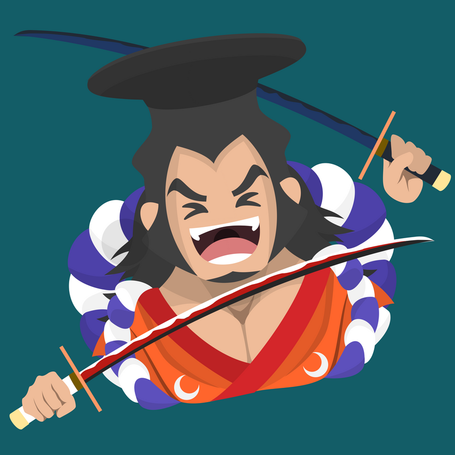
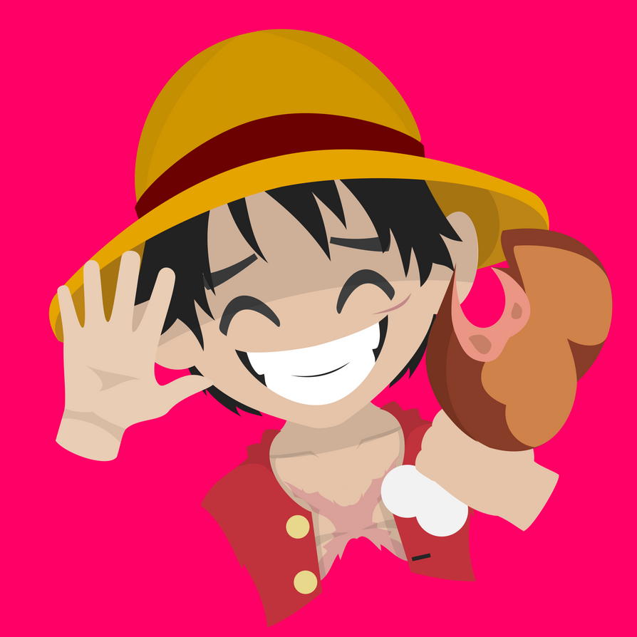
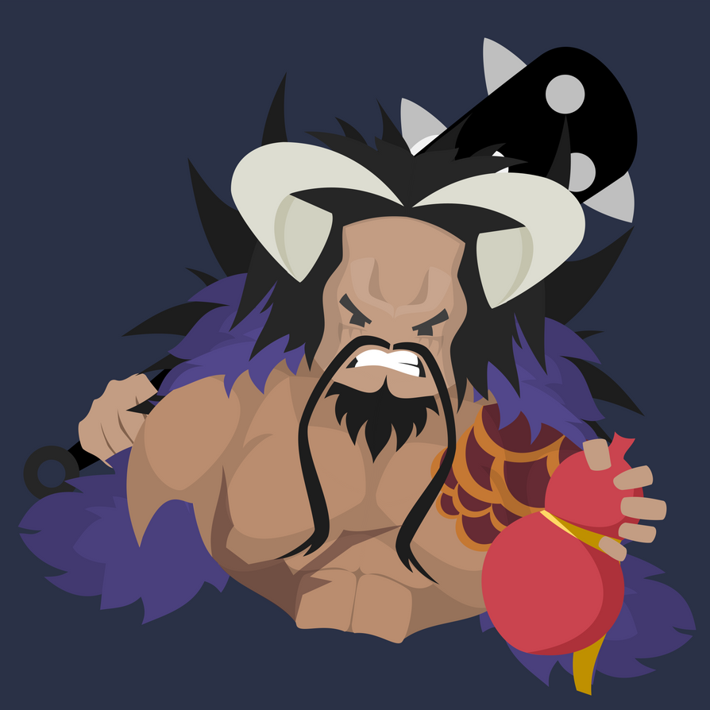
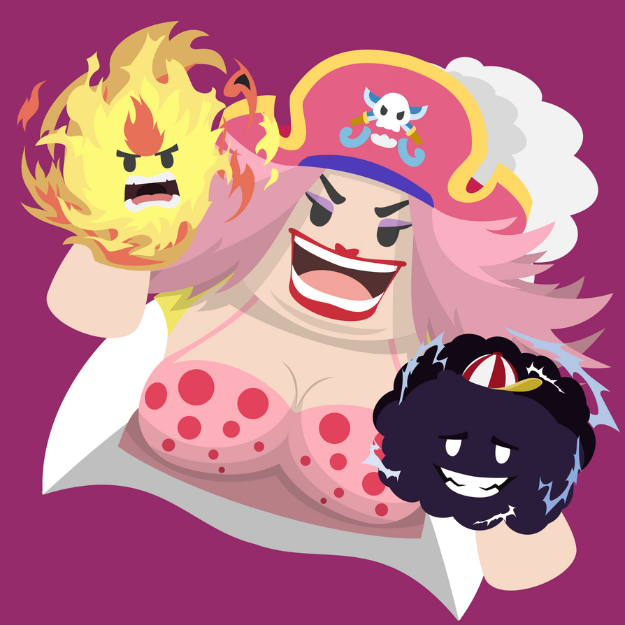
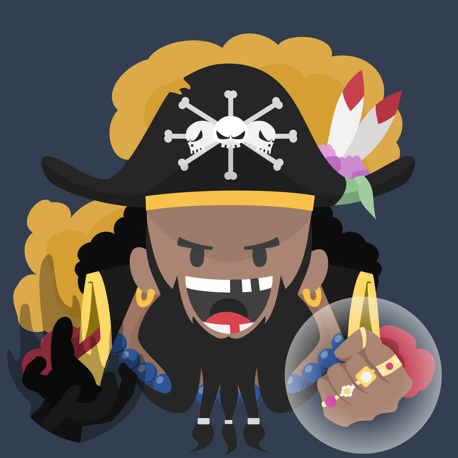

Kozuki Oden
Former Crew of Pirate King and White Beard
Kozuki Oden was the daimyo of Kuri in Wano Country and the son of the
former shogun Kozuki Sukiyaki, being a member of the Kozuki Family. He
was the husband of Kozuki Toki and the father of Momonosuke and
Hiyori. Additionally, he was the leader of a group of legendary and
powerful samurai known as the Nine Red Scabbards, with all of them
serving as his retainers and most trusted allies.

Monkey D. Luffy
New Emperor of the Sea
Monkey D. Luffy, commonly known as "Straw Hat Luffy" or simply "Straw
Hat", is the founder, captain, and strongest combatant of the
increasingly infamous and powerful Straw Hat Pirates. He fearlessly
pursues the legendary treasure of the late Gol D. Roger in order to
become the new Pirate King and reach a further, untold dream
(currently known to only his crew and closest friends). He believes
that being the Pirate King means having the most freedom in the world.

Kaido
Former Emperor of the Sea
Kaidou of the Beasts, renowned as the world's "Strongest Creature", is
the Governor-General of the Beasts Pirates and was formerly one of the
Four Emperors that ruled over the New World. He is also the father of
Yamato.

Charlotte Linlin
Former Emperor of the Sea
Charlotte Linlin, better known as "Big Mom", is the captain of the Big
Mom Pirates and was formerly one of the Four Emperors ruling over the
New World, as the only female member of that group. She is the
matriarch of the very large Charlotte Family, whose many children make
up the infrastructure of her crew. She is also the creator of the
unique race of creatures known as Homies, who mainly inhabit all of
Totto Land, and happily serve her. Big Mom possesses three special
homies, Napoleon, Prometheus, and Zeus, but unhappy with Zeus'
continued failures, Big Mom decided to disown and replace him with a
new Homie named Hera.

Marshal D. Teach
Emperor of the Sea
Marshall D. Teach, most commonly referred to by his epithet
"Blackbeard", is the captain-turned-admiral of the Blackbeard Pirates,
and one of the Four Emperors that rule over the New World. He is also
the only known person in history to wield the powers of two Devil
Fruits, as well as being part of a special bloodline, which is only
known to a small number of individuals, including his own crew and the
Five Elders.